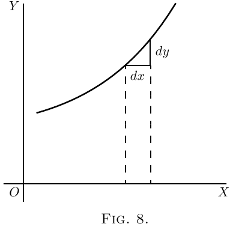
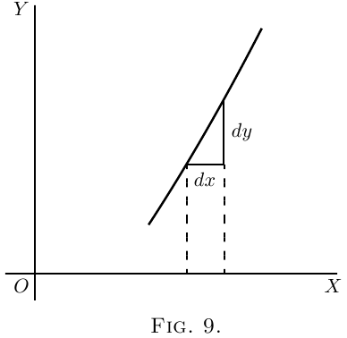
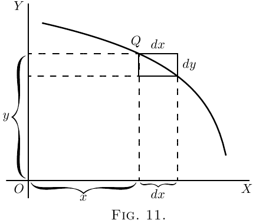
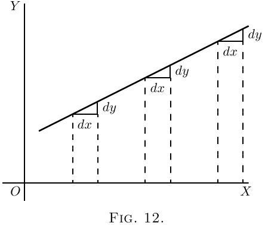
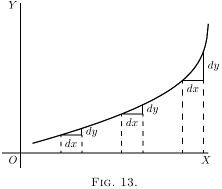
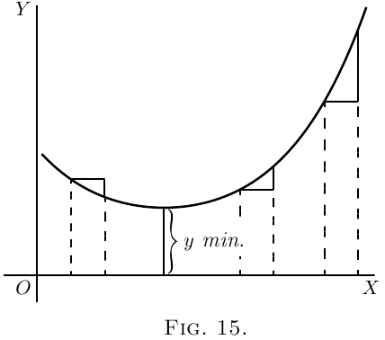
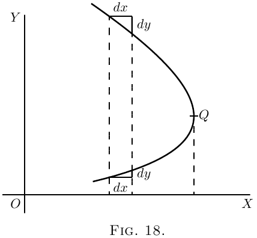
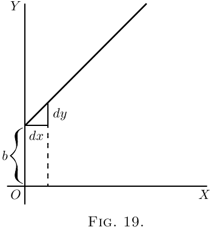

Seja $PQR$, na Figura 7, uma porção de uma curva traçada em relação aos eixos de coordenadas $OX$ e $OY$. Considere qualquer ponto $Q$ sobre essa curva, em que a abscissa do ponto é $x$ e sua ordenada é $y$. Observe agora como $y$ muda quando $x$ é variado. Se $x$ é feito aumentar por um pequeno incremento $dx$, para a direita, observar-se-á que $y$ também (nesta curva particular) aumenta por um pequeno incremento $dy$ (porque esta curva particular acontece de ser uma curva ascendente). Então a razão de $dy$ para $dx$ é uma medida do grau em que a curva está inclinada para cima entre os dois pontos $Q$ e $T$. De fato, pode-se ver na figura que a curva entre $Q$ e $T$ tem muitas inclinações diferentes, de modo que não podemos muito bem falar da inclinação da curva entre $Q$ e $T$. Se, porém, $Q$ e $T$ estiverem tão próximos um do outro que a pequena porção $QT$ da curva seja praticamente reta, então é verdade dizer que a razão $\dfrac{dy}{dx}$ é a inclinação da curva ao longo de $QT$. A reta $QT$ prolongada de um lado e de outro toca a curva ao longo da porção $QT$ apenas, e se essa porção for indefinidamente pequena, a reta tocará a curva em praticamente um único ponto, e será portanto uma tangente à curva.
Essa tangente à curva tem evidentemente a mesma inclinação que $QT$, de modo que $\dfrac{dy}{dx}$ é a inclinação da tangente à curva no ponto $Q$ para o qual o valor de $\dfrac{dy}{dx}$ é encontrado.
Vimos que a expressão curta “a inclinação de uma curva” não tem significado preciso, porque uma curva tem tantas inclinações - de fato, cada pequena porção de uma curva tem uma inclinação diferente. “A inclinação de uma curva em um ponto” é, porém, uma coisa perfeitamente definida; é a inclinação de uma porção muito pequena da curva situada justamente naquele ponto; e vimos que isto é o mesmo que “a inclinação da tangente à curva naquele ponto.”
Observe que $dx$ é um curto passo para a direita, e $dy$ o correspondente curto passo para cima. Esses passos devem ser considerados tão curtos quanto possível - de fato indefinidamente curtos - embora nos diagramas tenhamos de representá-los por pedaços que não são infinitesimalmente pequenos, caso contrário não poderiam ser vistos.
Daqui em diante faremos considerável uso desta circunstância de que $\dfrac{dy}{dx}$ representa a inclinação da curva em qualquer ponto.
 Se uma curva está inclinada a $45°$ em um ponto particular,
como na Figura 8, $dy$ e $dx$ serão iguais, e o valor
de $\dfrac{dy}{dx} = 1$.
Se a curva sobe mais íngreme do que $45°$ (Figura 9),
$\dfrac{dy}{dx}$ será maior do que $1$.
 Se a curva sobe muito suavemente, como na Figura 10,
$\dfrac{dy}{dx}$ será uma fração menor do que $1$.
Para uma linha horizontal, ou um trecho horizontal em uma
curva, $dy=0$, e portanto $\dfrac{dy}{dx}=0$.
 Se uma curva desce para baixo, como na Figura 11, $dy$ será
um passo para baixo, e deve portanto ser contado de
valor negativo; logo $\dfrac{dy}{dx}$ terá sinal negativo
também.
Se a “curva” acontece de ser uma reta, como
a da Figura 12, o valor de $\dfrac{dy}{dx}$ será o mesmo em
todos os pontos ao longo dela. Em outras palavras sua inclinação é constante.
 Se uma curva é uma que vira mais para cima conforme
avança para a direita, os valores de $\dfrac{dy}{dx}$ se tornarão
cada vez maiores com a íngreme crescente, como
na Figura 13.
 Se uma curva é uma que fica cada vez mais achatada conforme
avança, os valores de $\dfrac{dy}{dx}$ se tornarão cada vez
menores à medida que a parte mais plana é alcançada, como na Figura 14.
 Se uma curva primeiro desce, e depois sobe de novo,
como na Figura 15, apresentando uma concavidade para cima, então
claramente $\dfrac{dy}{dx}$ será primeiro negativo, com valores
decrescentes conforme a curva se achata, depois será zero no
ponto em que o fundo da calha da curva é
atingido; e a partir desse ponto em diante $\dfrac{dy}{dx}$ terá
valores positivos que vão aumentando. Nesse caso
diz-se que $y$ passa por um mínimo. O valor mínimo
de $y$ não é necessariamente o menor valor de $y$,
é aquele valor de $y$ correspondente ao fundo da
calha; por exemplo, na Figura 28 (o
valor de $y$ correspondente ao fundo da calha
é $1$, enquanto $y$ toma em outras partes valores que são menores
do que este. A característica de um mínimo é que
$y$ deve aumentar de um lado e do outro dele.
Nota - Para o valor particular de $x$ que faz
$y$ um mínimo, o valor de $\dfrac{dy}{dx} = 0$.
Se uma curva primeiro sobe e depois desce, os
valores de $\dfrac{dy}{dx}$ serão positivos a princípio; depois zero, quando
o cume é atingido; depois negativos, conforme a curva
desce, como na Figura 16. Nesse caso diz-se que $y$
passa por um máximo, mas o valor máximo
de $y$ não é necessariamente o maior valor de $y$.
Na Figura 28, o máximo de $y$ é $2\frac{1}{3}$, mas isto de modo algum
é o maior valor que $y$ pode ter em algum outro
ponto da curva.
Nota - Para o valor particular de $x$ que faz
$y$ um máximo, o valor de $\dfrac{dy}{dx}= 0$.
Se uma curva tem a forma peculiar da Figura 17, os
valores de $\dfrac{dy}{dx}$ serão sempre positivos; mas haverá
um lugar particular em que a inclinação é menos íngreme,
onde o valor de $\dfrac{dy}{dx}$ será um mínimo; isto é,
menor do que em qualquer outra parte da curva.
Se uma curva tem a forma da Figura 18, o valor de $\dfrac{dy}{dx}$
será negativo na parte superior, e positivo na
parte inferior; enquanto no nariz da curva onde ela
se torna realmente perpendicular, o valor de $\dfrac{dy}{dx}$ será
infinitamente grande.
 Agora que entendemos que $\dfrac{dy}{dx}$ mede a
íngreme de uma curva em qualquer ponto, voltemo-nos a algumas
das equações que já aprendemos a
diferenciar.
(1) Como o caso mais simples tome este:  Está traçada na Figura 19, usando escalas iguais
para $x$ e $y$. Se pusermos $x = 0$, então a correspondente
ordenada será $y = b$; isto é, a “curva”
cruza o eixo $y$ na altura $b$. Dali ela
sobe a $45°$; pois quaisquer valores que demos a $x$ para a
direita, temos um $y$ igual a subir. A reta
tem um gradiente de $1$ em $1$.
Agora diferencie $y = x+b$, pelas regras que já
aprendemos (aqui e aqui), e obtemos $\dfrac{dy}{dx} = 1$.
A inclinação da reta é tal que para cada pequeno
passo $dx$ para a direita, damos um pequeno passo igual $dy$
para cima. E essa inclinação é constante - sempre a
mesma inclinação.
(3) Agora um caso um pouco mais difícil. De novo a curva começará no eixo $y$ a uma altura $b$
acima da origem.
Agora diferencie. [Se você esqueceu, volte
aqui; ou, melhor, não volte, mas pense
a diferenciação por conta própria.]
\[
\frac{dy}{dx} = 2ax.
\]
Isso mostra que a íngreme não será constante:
ela aumenta conforme $x$ aumenta. No ponto de partida $P$,
onde $x = 0$, a curva (Figura 22) não tem íngreme - isto
é, está nivelada. À esquerda da origem, onde
$x$ tem valores negativos, $\dfrac{dy}{dx}$ também terá valores
negativos, ou descerá da esquerda para a direita, como na
Figura.
Ilustremos isso trabalhando um exemplo
particular. Tomando a equação